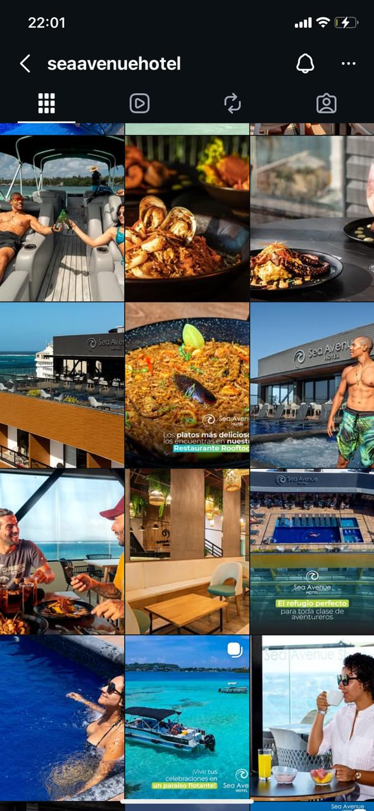
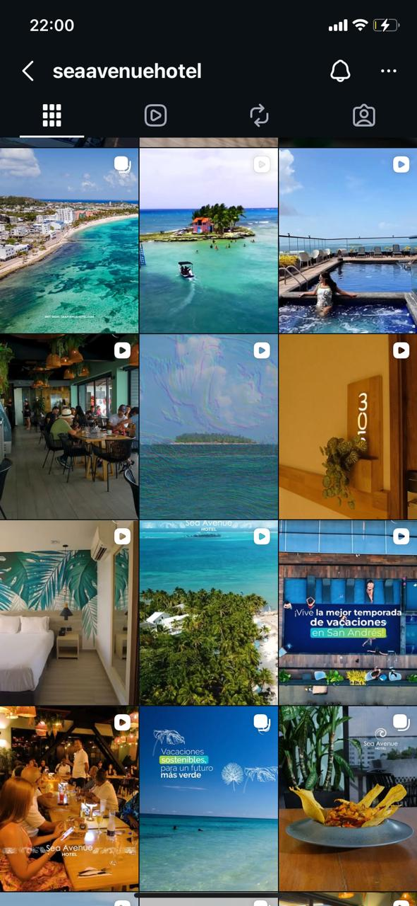
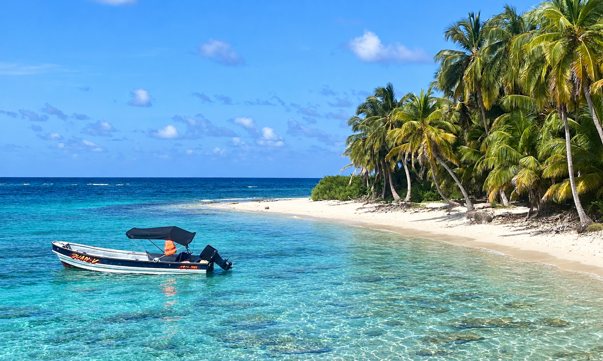
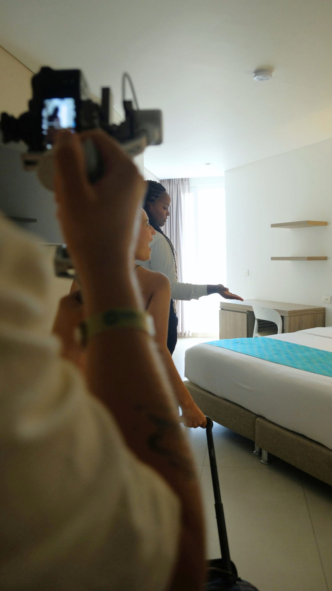
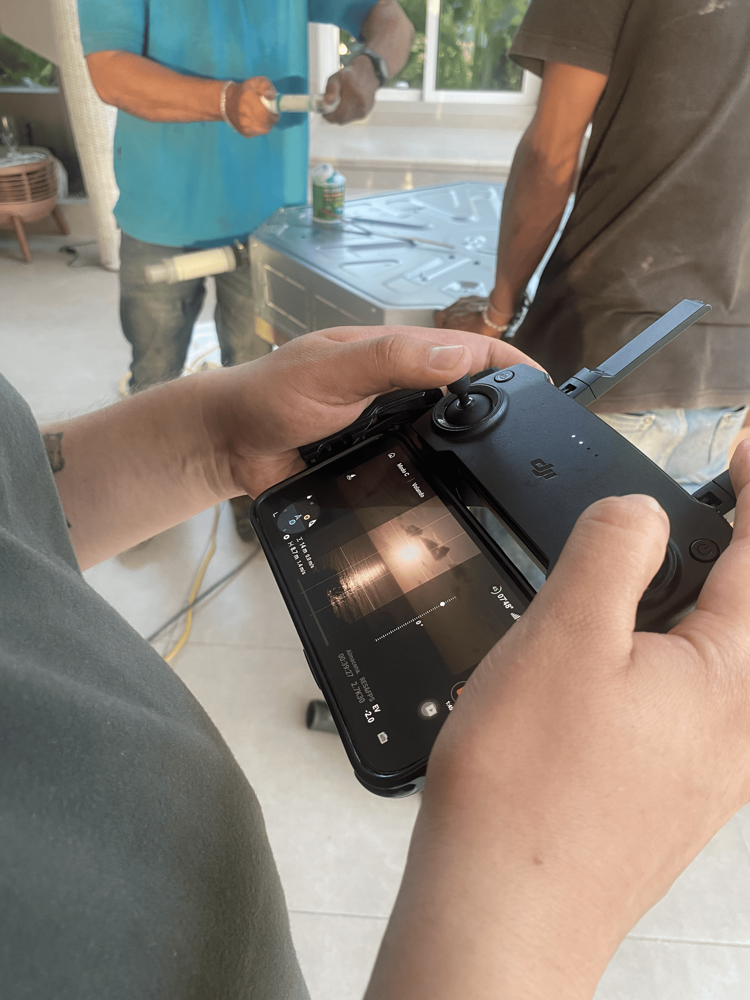

Crecimiento en ventas web
Entre las ideas y los resultados, está la estrategia.
Digital Strategist · Social Media · Content Creator · Account Management · Project Management
Paula Andrea Valenzuela González
Comunicadora Social & Periodista
01 · SOBRE MÍ
Me gusta estar en ese punto donde una idea empieza a tomar forma.
Soy comunicadora social y periodista con experiencia en marketing digital, Social Media, estrategia de contenido, copywriting y gestión de comunidades digitales . Me gusta transformar ideas en estrategias y acompañarlas hasta convertirlas en acciones que conecten con las personas y respondan a los objetivos de cada marca.
Mi experiencia integra creatividad, estrategia y análisis. He gestionado diferentes cuentas y proyectos, trabajando de la mano con clientes y equipos de trabajo, conectando frentes como contenido, Dirección Creativa, Paid Media, redes sociales, SEO y administración de sitios web , e incorporando la IA como herramienta en procesos creativos y estratégicos , para explorar nuevas formas de idear, agilizar y potenciar el trabajo.
He trabajado con Aviatur y diferentes marcas del sector hotelero, creando contenido, liderando producciones audiovisuales y encontrando oportunidades a partir del análisis de resultados.
Me mueve crear ideas que tengan intención, pero también hacer que pasen.
ROAS
Marcas gestionadas
02 · TRAYECTORIA PROFESIONAL
Una experiencia construida a través de proyectos.
GRUPO AVIATUR · 2023 — HOY
Avia Soluciones Hoteleras
Community Manager | Account Manager
Inicié como Community Manager, gestionando redes sociales, contenido, campañas y liderando producciones audiovisuales. Mi crecimiento dentro de Avia me llevó a asumir el rol de Account Manager, gestionando hasta 8 cuentas y ampliando mi experiencia hacia la gestión de clientes, coordinación de proyectos, manejo de equipos de trabajo, estrategia digital, posicionamiento de marca, administración web, SEO, Paid Media, análisis de resultados y optimización de acciones digitales.
Crecimiento en ventas
Estrategia integrada: web · redes · SEO · SEM
Estrategias de Paid Media
Gestionadas simultáneamente como Account Manager
MARCAS QUE HAN SIDO PARTE DEL CAMINO
Aquamare Hotel
Sea Avenue Hotel
Bahía Sardina
Praia Natura
Hotel Poblado
Hotel Campestre La Potra
Aqualina Hotel
Marina Puerto Velero
Playa Hawai
03 · PROYECTOS DESTACADOS
Aquamare Hotel
Trabajé con la marca desde diferentes frentes digitales: estrategia de contenido y Social Media, gestión de comunidad, campañas comerciales, de posicionamiento y producción audiovisual. También participé en la conceptualización y dirección de producciones, creación de contenido para experiencias del hotel y acciones orientadas a conectar la presencia en redes con la generación de ventas.
Durante mi gestión, la comunidad creció de 25K a 46K seguidores y se generaron más de $14 millones en ventas a través de redes sociales.
Sea Avenue Hotel
En esta marca acompañé la evolución de su presencia en redes desde el Community Management, desarrollando la estrategia de contenidos y una renovación de marca orientada a fortalecer su identidad digital. Gestioné la comunidad y el contenido de influencers, además de participar en la conceptualización y producción audiovisual de la marca.
Durante mi gestión, la comunidad creció de 7K a 14K seguidores y las acciones desde redes generaron más de $10 millones en ventas a través de redes sociales.
Antes

Después

Hoy miro la marca desde otro lugar.
En Sea Avenue Hotel orienté la estrategia a fortalecer la venta directa y mejorar la anticipación de las reservas. A través de una estrategia integrada en los diferentes canales del hotel, impulsamos su promoción más competitiva para aumentar las reservas con más de 90 días de anticipación, pasando de representar un 26% a un 55% y contribuyendo a construir ocupación con mayor previsión.
También ampliamos el alcance de la marca hacia nuevos mercados en LATAM y Europa, combinando Paid Media y posicionamiento orgánico para fortalecer la presencia internacional del hotel.
La estrategia alcanzó un ROAS de 24,7 y un crecimiento del 9% en ventas web.
04 · ESTRATEGIA DIGITAL EN ACCIÓN
No todas las marcas necesitan la misma estrategia
Cada cuenta parte de un reto distinto, por eso, mi trabajo comienza por entender qué está pasando, encontrar dónde está la oportunidad y definir qué acciones pueden generar un impacto real.
Analizo el comportamiento de la marca, sus canales, resultados y oportunidades para entender dónde estamos y qué necesita cambiar.
Identifico cómo se comporta el usuario en cada etapa y qué puntos podemos fortalecer para acercarlo a la conversión.
Ajusto campañas, canales y acciones a partir de los datos para mejorar el desempeño y aprovechar nuevas oportunidades.
Potencio lo que funciona, amplío oportunidades y llevo la estrategia hacia nuevos mercados, audiencias y resultados.
DEL MÉTODO A LA ACCIÓN
Hotel Bahía Sardina
Esta marca ya tenía un fuerte posicionamiento y una alta demanda anticipada. El reto estaba en llevar una mayor parte de esa demanda hacia el canal directo y ampliar su alcance internacional.
La estrategia partió de actualizar y segmentar audiencias, incorporar remarketing y optimizar las keywords de Google Ads. A partir de ahí, ampliamos la pauta hacia Brasil, Argentina, Chile y Estados Unidos , mientras fortalecíamos la venta directa con beneficios diferenciales frente a las OTAs y comunicaciones enfocadas en impulsar la reserva anticipada.
El trabajo se extendió al posicionamiento orgánico, optimizando web, imágenes y contenidos con keywords específicas para cada mercado e idioma , aprovechando uno de los canales con mayor potencial de la marca.
Logrando:
Crecimiento en ventas web
ROAS
Conversión desde Paid Search
Conversión desde Organic Search
05 · CUANDO LA ESTRATEGIA ENTRA EN ESCENA
Hay ideas que no terminan en un documento, terminan en un set.
San Andrés Islas · 2023 | 2025
2
Producciones audiovisuales
8
Hoteles por proyecto
17
Días de rodaje

Cada proyecto comenzó mucho antes de llegar al set; en primer lugar, participé en la conceptualización, guiones, shot list, selección de talentos, vestuario, locaciones y planeación de las jornadas , coordinando cada detalle junto al equipo audiovisual; luego, durante el rodaje, lideré la dirección en set, guiando talentos y supervisando que cada toma respondiera al concepto y a las necesidades de cada marca; por último, participé en la selección del material, revisión y aprobación de piezas , definiendo los contenidos que finalmente alimentarían la estrategia digital de cada hotel.



Así cobró vida
01
The Providence
02
Aquamare Hotel
03
Sea Avenue Hotel
04
Samawi Hotel
05
Hotel Bahía Sardina
06
Hotel Aqualina Inn
07
Hotel Américas
08
Hotel Portobelo
09
Hotel Caribbean Coral
✦ PLOT TWIST ✦
También terminé frente a la cámara, esta vez, como parte de la escena
Frente a cámara 01
Frente a cámara 02
Frente a cámara 03
Frente a cámara 04
Bogotá D.C. · 2024 — hoy
Crear también es estar ahí
En Bogotá he trabajado el contenido desde diferentes roles para marcas como Vou Suites, Hotel Virrey Central y Hotel Rosales Plaza . En algunos proyectos he estado desde el inicio, construyendo la línea de contenido, definiendo conceptos, planeando piezas y llevando cada idea hasta su ejecución.
En otros, además de trabajar en la estrategia y creación de contenido, también he sido la imagen frente a cámara, participando en piezas enfocadas en comunicar las experiencias, servicios y propuestas de cada hotel.
Bogotá 01
Bogotá 02
Bogotá 03
Bogotá 04
Bogotá 05
Bogotá 06
Bogotá 07
Bogotá 08
Bogotá 09
Bogotá 10
06 · EXPERIENCIA
Proyectos que hago realidad
Account Management
Conecto estrategia, equipos y ejecución para que cada proyecto avance con dirección y responda a objetivos claros.
Estrategia digital · Gestión de proyectos · Analítica & reporting · Paid Media · SEO · Web · Optimización
Social Media Manager & Content Creator
Construyo la presencia digital de una marca desde la estrategia hasta el contenido que finalmente llega a su comunidad.
Estrategia de contenido · Social Media · Copywriting · Community Management · Tendencias & formatos
Producción Audiovisual
Llevo una idea desde su conceptualización hasta la pieza final, coordinando cada etapa y tomando decisiones creativas durante todo el proceso.
Conceptualización · Preproducción · Dirección en set · Talentos & locaciones · Coordinación de equipos · Postproducción
ECOSISTEMA DE TRABAJO
✦ Google Analytics 4
✦ Looker Studio
✦ Google Search Console
✦ Meta Ads
✦ Google Ads
✦ Meta Business Suite
✦ Metricool
✦ Trello
✦ Notion
✦ Canva
✦ CapCut
✦ Adobe
✦ ChatGPT
✦ Claude
✦
CONVERSEMOS
TU PROYECTO PODRÍA SER EL SIGUIENTE
Si tienes una idea, hablemos de cómo hacerla realidad.
WHATSAPP ↗